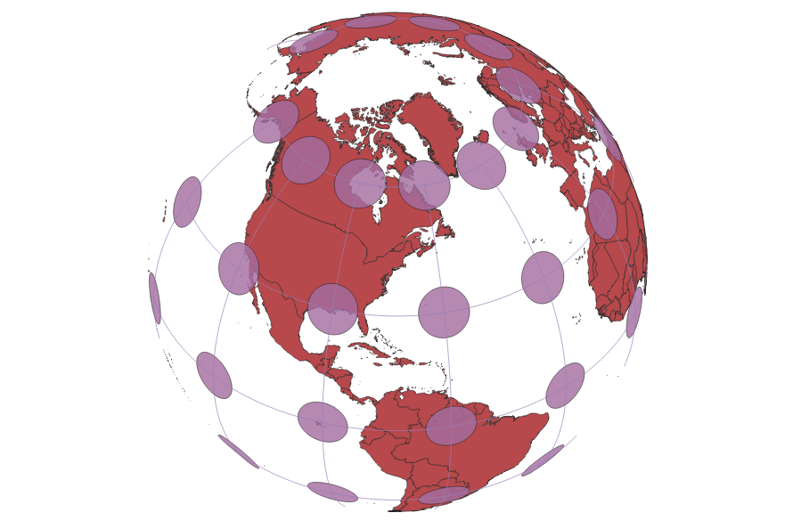

In this project I learned how to display images in different projections:
I displayed the world map using different projections in QGIS by first adjusting the EPSG settings.
I then ran the Indicatrix Mapper plugin over the vector data. These indicatrices are used to show the pattern of
distortion due to the use of the WGS84 geographic projection. Each projection has a different pattern of distortion. All of these maps were created using the World
Projection data provided on Sakai. After each projection was created I exported them as .png files in order to include them on this site.
Sphere Projection
The sizes and shapes on this projection seem fairly accurate until you get closer to the poles where there is some distortion.

Cylindrical Equal Area Projection
Appears greatly disorted at the poles, stretched horizontally throughout most of the map.

Cylindrical Projection
Less stretched at the poles than the Equal Area Cylindrical Projection, but area is not well preserved.

Pseudo Mercator Projection
This projection also does a very poor job of preserving area. Size of continents increases greatly at the poles.

Azimuthal Equidistant Projection
Similarly does a poor job of portraying areas and there is a lot of stretching and distortion at the poles, especially of Antarctica.

Polyconical Projection
Does a decent job of preserving area, especially at the poles as compared to other projections. However, this projection does have large amounts of distortion, but mainly in areas over the ocean.

Projection of World From Space
I wanted to include one projection with little to no distortion, which the view of Earth from space displays. However, unfortunately the entire globe cannot be seen in this projection, making it impractical as a flat map.

Data used for this project
Download Natrual Earth 1:10m Cultural Vector